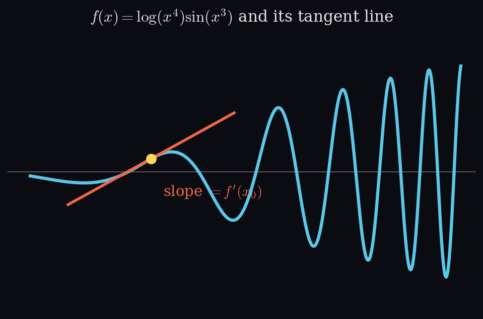
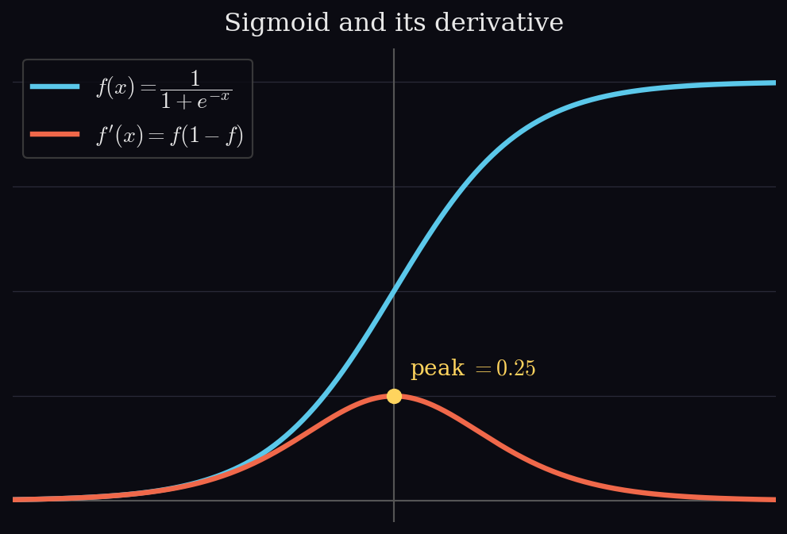
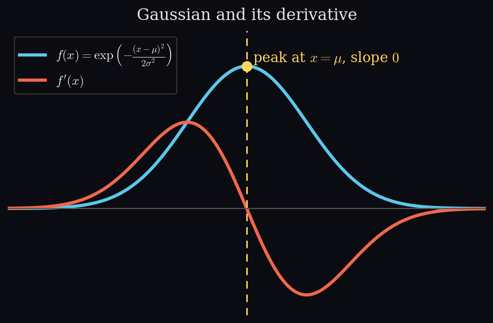

Chapter 5 · Vector Calculus¶
End-of-chapter exercises. Each has a definitions box, explanation, worked steps, and the answer.
5.1 · Differentiating a product with nested functions¶
Calculus I · differentiation rules
Compute the derivative \(f'(x)\) for
Topics & Definitions
Read the structure of the expression before differentiating. Ask, in order:
| What you see | Rule to use | Form |
|---|---|---|
| Two things multiplied | product rule | \((uv)' = u'v + uv'\) |
| Two things divided | quotient rule | \(\left(\tfrac{u}{v}\right)' = \tfrac{u'v - uv'}{v^2}\) |
| A function inside another | chain rule | \(\big(g(h(x))\big)' = g'(h(x))\cdot h'(x)\) |
| Terms added or subtracted | differentiate each separately | \((u+v)' = u' + v'\) |
Here \(\log(x^4)\sin(x^3)\) is two things multiplied, so the product rule applies at the top level. Each factor then has something inside it (\(x^4\) in the log, \(x^3\) in the sin), so the chain rule applies within each factor. Rules nest: identify the outermost structure first, then work inward.
A handy log simplification: \(\log(x^n) = n\log(x)\), so \(\log(x^4) = 4\log(x)\) and its derivative is immediately \(4/x\). The chain rule gives the same thing: \(\tfrac{1}{x^4}\cdot 4x^3 = \tfrac{4x^3}{x^4} = \tfrac{4}{x}\).
The two most common slips
Do not multiply the derivatives. The product rule is \(u'v + uv'\), two terms added, not \(u'v'\).
The inner derivative goes outside. For \(\sin(x^3)\) the chain rule gives \(\cos(x^3)\cdot 3x^2\): the \(3x^2\) multiplies from outside, and the inside of the cosine stays \(x^3\). Writing \(\cos(3x^2)\) is wrong, the inside never changes.
Step 1, identify the structure
The expression is a product of two factors:
So the top-level rule is the product rule, \(f' = u'v + uv'\), and each factor then needs the chain rule.
Step 2, differentiate \(u = \log(x^4)\)
Chain rule: \(\tfrac{d}{dx}\log(\text{inside}) = \tfrac{1}{\text{inside}}\cdot(\text{inside})'\).
The \(4x^3\) lands on the numerator, then \(x^3/x^4\) simplifies to \(1/x\).
Step 3, differentiate \(v = \sin(x^3)\)
Chain rule: \(\tfrac{d}{dx}\sin(\text{inside}) = \cos(\text{inside})\cdot(\text{inside})'\).
The inside of the cosine stays \(x^3\); the \(3x^2\) multiplies from outside.
Step 4, assemble with the product rule
Answer
Two terms, added, one from differentiating each factor while holding the other fixed. Both terms needed the chain rule internally, which is why the exercise combines the two rules.

5.2 · Derivative of the logistic sigmoid¶
Calculus I · differentiation rules
Compute the derivative \(f'(x)\) of the logistic sigmoid
Topics & Definitions
- Structure first — this is one thing divided by another, so the quotient rule applies: \(\left(\tfrac{u}{v}\right)' = \tfrac{u'v - uv'}{v^2}\).
- Constant numerator — here \(u = 1\) and \(v = 1 + \exp(-x)\). Since \(u' = 0\), the first term of the quotient rule vanishes entirely and only \(-uv'/v^2\) survives. Spotting that early saves work.
- The denominator needs the chain rule — \(\tfrac{d}{dx}\exp(\text{inside}) = \exp(\text{inside})\cdot(\text{inside})'\). With inside \(-x\) (derivative \(-1\)), \(\tfrac{d}{dx}\exp(-x) = -\exp(-x)\).
- Alternative route — rewriting \(f(x) = (1 + \exp(-x))^{-1}\) turns this into a pure chain-rule exercise (outer \((\cdot)^{-1}\), inner \(1 + \exp(-x)\)) and gives the same answer.
Common slip
In \(v^2\), square the whole denominator \(v = 1 + \exp(-x)\), not its derivative. Writing \((-\exp(-x))^2\) squares \(v'\) by mistake.
Step 1, identify \(u\) and \(v\)
so \(u' = 0\) and, by the chain rule, \(v' = -\exp(-x)\).
Step 2, apply the quotient rule
The first term is zero, and the double negative in the second becomes positive:
Answer
A useful rearrangement. This is equivalent to
expressing the derivative purely in terms of the sigmoid's own output.
Where this shows up: backpropagation
When a sigmoid is used as a neuron's activation, training the network needs its derivative at every step. Backpropagation works backwards through the layers multiplying by local derivatives (the chain rule again), and the sigmoid's local derivative is exactly \(f(x)\big(1 - f(x)\big)\). Because the forward pass already stored the output \(f(x)\), the gradient costs just one subtraction and one multiplication, with no new \(\exp\) to evaluate. That reuse is a big part of why the sigmoid was such a popular activation.

5.3 · Derivative of the Gaussian¶
Calculus I · differentiation rules
Compute the derivative \(f'(x)\) of
where \(\mu, \sigma\) are constants.
Topics & Definitions
- What is constant here — we differentiate with respect to \(x\), so everything that is not \(x\) is held fixed. Both \(\mu\) (the mean) and \(\sigma\) (the standard deviation) are fixed, so \(\tfrac{1}{2\sigma^2}\) is just a constant multiplier and \(\tfrac{d}{dx}(-\mu) = 0\).
- The chain rule applies twice — the outermost function is \(\exp(\cdot)\); inside it is \(-\tfrac{1}{2\sigma^2}(x-\mu)^2\); inside that is \((x-\mu)\). Each layer contributes a factor.
- Key pattern — \(\tfrac{d}{dx}\exp(g(x)) = g'(x)\exp(g(x))\): the exponential is reproduced unchanged, multiplied by the derivative of its exponent. The exponent itself never changes.
A fraction does not automatically mean the quotient rule
The quotient rule applies to \(\tfrac{u}{v}\) where both parts are functions of \(x\). Here \(2\sigma^2\) contains no \(x\) at all, so \(-\tfrac{1}{2\sigma^2}(x-\mu)^2\) is simply (constant) \(\times\) (function): differentiate the function and carry the constant along. Likewise, when multiplying a fraction by a term, only the numerator is affected:
the denominator is untouched, because the second factor has denominator \(1\).
Step 1, differentiate the exponent
Let \(g(x) = -\dfrac{1}{2\sigma^2}(x-\mu)^2\). The constant \(-\tfrac{1}{2\sigma^2}\) comes along for the ride; apply the power rule to \((x-\mu)^2\):
The innermost chain-rule factor is \(1\) (since \(\mu\) is constant), so it is invisible here, but it is still a chain-rule step, and it is \(1\), not \(0\).
Step 2, combine the constant
Only the \(2\)s cancel; the \(\sigma^2\) stays in the denominator and the minus sign survives.
Step 3, apply the outer chain rule
substituting \(g'(x)\) from Step 2 and leaving the exponent unchanged.
Answer
Sanity check on the shape. The derivative is zero exactly when \(x = \mu\), the peak of the bell curve where the slope is flat. For \(x > \mu\) the factor \(-(x-\mu)\) is negative, so the curve is descending; for \(x < \mu\) it is positive, so the curve is ascending. This matches the familiar Gaussian shape.

5.4 · Taylor polynomials of \(\sin(x) + \cos(x)\)¶
Calculus II · Taylor series
Compute the Taylor polynomials \(T_n\) for \(n = 0, \dots, 5\) of
at \(x_0 = 0\).
Topics & Definitions
- The Taylor polynomial — of degree \(n\) about \(x_0\) is \(T_n(x) = \sum_{k=0}^{n} \dfrac{f^{(k)}(x_0)}{k!}\,(x-x_0)^k\). At \(x_0 = 0\) (a Maclaurin polynomial) this simplifies to \(\sum \tfrac{f^{(k)}(0)}{k!}x^k\), since \((x-0)^k = x^k\).
- Sine and cosine derivatives cycle with period four — \(\sin \to \cos \to -\sin \to -\cos \to \sin \to \dots\). Once you have four derivatives, the pattern repeats, which makes this much shorter than it looks.
- Lower-order polynomials are truncations — \(T_3\) is just \(T_5\) with the last two terms removed, so computing \(T_5\) gives you all of them at once.
Read \(f^{(k)}(x_0)\) carefully
\(f^{(k)}(x_0)\) means "the \(k\)-th derivative, evaluated at \(x_0\)", not the derivative multiplied by \(x_0\). Even when \(x_0 = 0\) these values are generally nonzero: here \(f(0) = \sin 0 + \cos 0 = 1\). Order of operations matters: differentiate first, substitute afterwards.
Step 1, the derivatives and their values at \(0\)
| \(k\) | \(f^{(k)}(x)\) | \(f^{(k)}(0)\) |
|---|---|---|
| 0 | \(\sin x + \cos x\) | \(1\) |
| 1 | \(\cos x - \sin x\) | \(1\) |
| 2 | \(-\sin x - \cos x\) | \(-1\) |
| 3 | \(-\cos x + \sin x\) | \(-1\) |
| 4 | \(\sin x + \cos x\) | \(1\) |
| 5 | \(\cos x - \sin x\) | \(1\) |
At \(k = 4\) the function returns to itself, confirming the period-four cycle. The values at \(0\) follow the repeating pattern \(1, 1, -1, -1, 1, 1, \dots\).
Step 2, assemble the coefficients
Divide each value by \(k!\):
Answer
The sign pattern \(+\,+\,-\,-\,+\,+\) mirrors the four-step derivative cycle and is a useful check that the derivatives were tracked correctly.
5.5 · Jacobian dimensions¶
Calculus III · multivariable derivatives
Consider the functions
Part a
What are the dimensions of \(\partial f_i / \partial \boldsymbol{x}\)?
Topics & Definitions
- The dimension rule — for \(f : \mathbb{R}^n \to \mathbb{R}^m\), the Jacobian \(\partial f/\partial \boldsymbol{x}\) has dimension \(m \times n\), that is (output dimension) \(\times\) (input dimension). Each row is one output component, each column one input variable. This part can be answered purely by reading the domain and codomain, no differentiation required.
- Scalar-valued means a row — a scalar-valued function (\(m = 1\)) always has a Jacobian that is a single row vector, with one entry per input variable. All three functions here are scalar-valued, so all three Jacobians are rows.
Read the space each variable lives in
In \(f_3\), \(x \in \mathbb{R}\) is a scalar, not a vector, so \(xx^\top\) is simply \(x^2\) (a scalar) and the Jacobian is \(1\times1\). If \(x\) were a column vector in \(\mathbb{R}^n\), then \(xx^\top\) would be an \(n\times n\) matrix and the derivative a very different object. The dimension annotation is doing real work here.
Reading off each function
| Function | Input space | Output space | Jacobian dimension |
|---|---|---|---|
| \(f_1\) | \(\mathbb{R}^2\) | \(\mathbb{R}\) | \(1 \times 2\) |
| \(f_2\) (w.r.t. \(\boldsymbol{x}\)) | \(\mathbb{R}^n\) | \(\mathbb{R}\) | \(1 \times n\) |
| \(f_3\) | \(\mathbb{R}\) | \(\mathbb{R}\) | \(1 \times 1\) |
Answer
All three are row vectors, since every function here maps into \(\mathbb{R}\), a useful structural check before computing anything.
Part b
Compute the Jacobians.
Topics & Definitions
- What a Jacobian is — all the partial derivatives of a function collected into a matrix, \(\left(\tfrac{\partial f}{\partial \boldsymbol{x}}\right)_{ij} = \tfrac{\partial f_i}{\partial x_j}\). Rows are output components, columns are input variables, so entry \((i,j)\) answers "how does output \(i\) respond to input \(j\)?".
- Why it exists — for a single-variable function the derivative is one number (the slope); for several variables you need the rate of change in every input direction, and the Jacobian packages them all into one object so it acts as "the derivative" of a vector-valued function.
- Scalar-valued collapses to a row — all three functions here are scalar-valued, so each Jacobian is \(\tfrac{\partial f}{\partial \boldsymbol{x}} = \begin{pmatrix}\tfrac{\partial f}{\partial x_1} & \cdots & \tfrac{\partial f}{\partial x_n}\end{pmatrix}\). Once the partials are computed, arranging them in a row is the Jacobian.
Dot products expand nicely
Writing \(\boldsymbol{x}^\top\boldsymbol{y} = x_1y_1 + x_2y_2 + \dots + x_ny_n\) makes the differentiation transparent: differentiating with respect to \(x_i\), every term without \(x_i\) is constant and vanishes, leaving \(y_i\).
Jacobian of \(f_1\)
Two partial derivatives, one per input variable, each holding the other constant:
Arranged as a row:
This is \(1\times2\), matching part a.
Jacobian of \(f_2\)
Expand the dot product:
Differentiating with respect to \(x_1\), the terms \(x_2y_2, \dots, x_ny_n\) contain no \(x_1\) and vanish; the surviving \(x_1y_1\) has \(y_1\) as a constant multiplier, giving \(y_1\). The same for each \(x_i\) gives \(y_i\). Collecting all \(n\) partials:
This is \(1\times n\), matching part a.
Jacobian of \(f_3\)
Since \(x \in \mathbb{R}\) is a scalar, \(xx^\top = x^2\), so by the power rule
This is \(1\times1\), matching part a.
Answer
Each result has the dimension predicted in part a, a useful structural check. All three are row vectors because all three functions map into \(\mathbb{R}\).
5.6 · Chain rule with nested functions, and a gradient with respect to a matrix¶
Calculus III · multivariable derivatives
Differentiate \(f\) with respect to \(t\) and \(g\) with respect to \(X\), where
Part a
Topics & Definitions
- The chain rule — for nested functions, \(\tfrac{d}{dx}g\big(h(x)\big) = g'\big(h(x)\big)\cdot h'(x)\): differentiate the outer function, leave its inside unchanged, then multiply by the derivative of the inside.
- Why three times here — \(f(t) = \sin(\log(t^\top t))\) nests three functions, so the chain rule applies three times. The most common slip is letting a lower layer's derivative creep into a higher layer's brackets: the inside of a function never changes when you differentiate it, only new factors appear on the outside.
- Differentiating \(t^\top t\) — write it in components, \(t^\top t = t_1^2 + \dots + t_D^2\). Each partial is a power rule, \(\tfrac{\partial}{\partial t_i}(t_1^2 + \dots + t_D^2) = 2t_i\), so collecting all \(D\) as a row gives \(\tfrac{\partial}{\partial t}(t^\top t) = \begin{pmatrix}2t_1 & \cdots & 2t_D\end{pmatrix} = 2t^\top\).
Think of it as peeling layers
Picture the expression as an onion with three layers:
| Layer | What it is |
|---|---|
| Outer | \(\sin(\,\cdot\,)\) |
| Middle | \(\log(\,\cdot\,)\) |
| Inner | \(t^\top t\) |
Peel from the outside in: at each layer, differentiate only that layer and leave everything inside it untouched, producing one factor per layer. Then multiply the factors together, and that multiplication is the chain rule at work.
Layer 1, peel the sine
Differentiate \(\sin(\,\cdot\,)\) into \(\cos(\,\cdot\,)\), keeping the inside exactly as it was:
The \(\log(t^\top t)\) is carried across untouched; nothing from the inner layers has appeared yet.
Layer 2, peel the logarithm
The derivative of \(\log(u)\) is \(\tfrac{1}{u}\), so this layer contributes
Again the inside \(t^\top t\) stays as it is.
Layer 3, peel the dot product
From the working above, the innermost layer contributes
Multiply the layers together
The chain rule joins the three factors by multiplication:
Part a answer
Three nested functions, three chain-rule factors, all multiplied. The result is a row vector because \(f\) is scalar-valued and \(t\) is a vector.
Part b
Topics & Definitions
- The trace — \(\operatorname{tr}(M) = M_{11} + M_{22} + \dots + M_{nn}\), the sum of the diagonal entries. To differentiate \(\operatorname{tr}(AXB)\) we need its diagonal entries in terms of the entries of \(X\).
- Dimensions force a square product — the trace needs a square matrix, and \((D\times E)(E\times F)(F\times D) = D\times D\) \(\checkmark\): inner dimensions cancel and both outer ones are \(D\). The annotations are what make the trace well defined.
- Concrete small matrices — with general \(D,E,F\) the expansion is a triple sum; setting \(D=E=F=2\) makes everything \(2\times2\) and the trace expands into just eight visible terms, with the same structure as the general case.
- Shape of the gradient — differentiating a scalar with respect to a matrix gives a gradient in the same shape as \(X\) (not a Jacobian row): each partial sits in the position of the entry it came from.
Step 1, set up \(2\times2\) matrices
Take \(D=E=F=2\):
The product \(AXB\) is \(2\times2\), so its trace is \((AXB)_{11} + (AXB)_{22}\).
Step 2, expand the trace
Multiplying out and summing the two diagonal entries gives eight terms:
Every term is linear in exactly one entry of \(X\), with a coefficient built from one \(a\) and one \(b\). That linearity is what makes the differentiation straightforward.
Step 3, take the partial derivatives
For each entry of \(X\), keep only the terms containing it; the rest are constant and vanish, leaving the coefficient beside it:
Across all four partials, each of the eight terms is picked up exactly once.
Step 4, arrange in the shape of \(X\)
Part b answer
The four partials arranged in the shape of \(X\) are a complete and correct answer. Written compactly,
Each entry is a row of \(B\) dotted with a column of \(A\), exactly an entry of \(BA\), with the index positions coming out transposed. Recognising this compact form is a convenience rather than a requirement: the expanded four-entry matrix is the same object.
5.7 · Chain rule with dimensions¶
Calculus III · multivariable derivatives
Compute \(df/dx\) for the following functions using the chain rule, giving the dimensions of every partial derivative.
(a) \(f(z) = \log(1+z)\), where \(z = x^\top x\) and \(x \in \mathbb{R}^D\).
(b) \(f(z) = \sin(z)\), where \(z = Ax + b\), with \(A \in \mathbb{R}^{E \times D}\), \(x \in \mathbb{R}^D\), \(b \in \mathbb{R}^E\).
Topics & Definitions
- The chain rule in this form — when \(f\) depends on \(x\) through an intermediate \(z\), \(\dfrac{df}{dx} = \dfrac{df}{dz}\cdot\dfrac{dz}{dx}\). Compute each factor separately, then multiply. The factors are matrices in general, so the order matters.
- Dimensions of a matrix product — the inner dimensions must match and cancel, the outer ones survive: \((m\times k)(k\times n) = m\times n\). Inner must match because multiplication dots a row against a column (same length required); outer survive because there is one entry per (row, column) pair.
- Overall dimension check — for \(f\) with output in \(\mathbb{R}^m\) and input \(x \in \mathbb{R}^n\), the final \(df/dx\) must be \(m\times n\). Verifying this confirms the chain was assembled in the right order.
What transforms, and what carries over
The layer being differentiated transforms into its derivative; whatever sits inside it carries over unchanged. So differentiating \(\log(u)\) turns the log into \(1/u\) (it does not survive, being the layer differentiated), while \(u\) is untouched. In Exercise 5.6 the log did survive inside \(\cos(\log(t^\top t))\), but only because it was nested one level below the sine being differentiated: same rule, different position in the stack. Quick check: \(\tfrac{d}{dx}\log(x^2) = \tfrac{1}{x^2}\cdot 2x = \tfrac{2}{x}\), agreeing with \(\log(x^2) = 2\log x\).
Part a
Step 1, outer layer \(df/dz\)
With \(f(z) = \log(1+z)\) and inside \(u = 1+z\),
Both \(f\) and \(z\) are scalars, so this partial is \(1\times1\). No logarithm appears: it was the layer being differentiated, so it became a reciprocal.
Step 2, inner layer \(dz/dx\)
Write the dot product in components, \(z = x^\top x = x_1^2 + \dots + x_D^2\). Differentiating with respect to \(x_i\) leaves \(2x_i\), so
A scalar output with \(D\) inputs gives dimension \(1\times D\).
Step 3, multiply
Dimensions: \((1\times1)(1\times D) = 1\times D\).
Part a answer
Dimensions of each partial:
The final shape is \(1\times D\) because \(f\) is scalar-valued and \(x\) has \(D\) components.
Part b
Step 1, outer layer \(df/dz\)
Here \(z = Ax+b \in \mathbb{R}^E\), so \(f = \sin(z) \in \mathbb{R}^E\) with the sine applied elementwise, and the Jacobian is \(E\times E\) with entry \((i,j) = \partial f_i/\partial z_j\). Since \(f_i = \sin(z_i)\) depends on \(z_i\) only, every off-diagonal entry is zero and the matrix is diagonal:
Why diag(...) and not just cos(Ax+b)
\(\cos(Ax+b)\) is a vector of \(E\) entries, and a vector cannot be multiplied by the \(E\times D\) matrix that follows. The genuine derivative is the \(E\times E\) diagonal matrix above; \(\operatorname{diag}(\cdot)\) is shorthand for placing those values on the diagonal with zeros elsewhere, which is what makes the next matrix product valid.
Step 2, inner layer \(dz/dx\)
With \(z = Ax+b\), the term \(b\) is constant and \(Ax\) is linear in \(x\), so
Step 3, multiply
Dimensions: \((E\times E)(E\times D) = E\times D\). The inner \(E\)s match and cancel; the outer \(E\) and \(D\) survive.
Keep the factors separate
The \(A\) from the inner layer multiplies from outside; it does not move into the argument of the cosine, which stays exactly \(Ax+b\). Writing something like \(\cos(A^2x+b)\) merges two separate chain-rule factors into one and is wrong, in the same way that \(\tfrac{d}{dx}\sin(x^3) = 3x^2\cos(x^3)\) keeps \(x^3\) inside and puts \(3x^2\) outside.
Part b answer
Dimensions of each partial:
The final shape \(E\times D\) matches (output dimension) by (input dimension), since \(f \in \mathbb{R}^E\) and \(x \in \mathbb{R}^D\).
5.8 · Chain rule, traces, and elementwise functions¶
Calculus III · multivariable derivatives
Compute \(df/dx\) for the following functions, describing each step in detail.
Part a
Use the chain rule and provide the dimensions of every partial derivative:
where \(x, \mu \in \mathbb{R}^D\) and \(S \in \mathbb{R}^{D\times D}\).
Topics & Definitions
- Three nested layers — the chain rule applies twice: \(\dfrac{df}{dx} = \dfrac{df}{dz}\cdot\dfrac{dz}{dy}\cdot\dfrac{dy}{dx}\).
- A multiplied constant survives; only an added one vanishes — \(S^{-1}\) has no \(x\) or \(y\), so it is constant, but it is multiplied in, so it appears in the answer. Compare \(\tfrac{d}{dx}(x+7) = 1\) (added, \(7\) vanishes) with \(\tfrac{d}{dx}(7x) = 7\) (multiplied, \(7\) survives).
- Differentiating a quadratic form — expanding \(y^\top S^{-1} y\) and collecting the partials gives \(y^\top(S^{-1} + S^{-\top})\), which simplifies to \(2y^\top S^{-1}\) when \(S\) is symmetric (as covariance matrices always are).
- Check the shapes — \(y^\top S^{-1} y\) chains as \((1\times D)(D\times D)(D\times 1) = 1\times1\), a scalar. If your expansion produces a matrix, the order has slipped, likely computing \(yy^\top\) (\(D\times D\)) instead of \(y^\top y\).
Step 1, outer layer \(df/dz\)
With \(u = -\tfrac12 z\), the derivative of \(\exp(u)\) is \(\exp(u)\cdot u'\), and \(u' = -\tfrac12\):
Step 2, middle layer \(dz/dy\)
From the expansion above, with \(S\) symmetric:
Step 3, inner layer \(dy/dx\)
With \(y = x - \mu\), each \(y_i = x_i - \mu_i\), so \(\partial y_i/\partial x_i = 1\) and \(\partial y_i/\partial x_j = 0\) for \(i \neq j\): ones on the diagonal, zeros elsewhere:
Step 4, chain and substitute back
Dimensions: \((1\times1)(1\times D)(D\times D) = 1\times D\). Multiplying by \(I\) changes nothing, so it drops. Finally substitute \(y = x-\mu\) and \(z = (x-\mu)^\top S^{-1}(x-\mu)\), since the answer must be in \(x\) alone.
Part a answer
The factors of \(-\tfrac12\) and \(2\) cancel, leaving a single minus sign. Dimensions: \(\tfrac{df}{dz}\in\mathbb{R}^{1\times1}\), \(\tfrac{dz}{dy}\in\mathbb{R}^{1\times D}\), \(\tfrac{dy}{dx}\in\mathbb{R}^{D\times D}\), \(\tfrac{df}{dx}\in\mathbb{R}^{1\times D}\).
Part b
Topics & Definitions
- Read the space carefully — \(x \in \mathbb{R}^D\) is a vector, so \(xx^\top\) is an outer product, \((D\times1)(1\times D) = D\times D\), the reverse of the inner product \(x^\top x\) (a scalar). Getting these two the wrong way round changes the problem entirely.
- The trace of an outer product — for \(D=2\), \(xx^\top = \begin{pmatrix}x_1^2 & x_1x_2\\ x_1x_2 & x_2^2\end{pmatrix}\), whose diagonal sums to \(x_1^2 + x_2^2 = x^\top x\).
- The identity term — \(\sigma^2 I\) contributes \(\sigma^2\) in each of the \(D\) diagonal positions, so \(D\sigma^2\) to the trace. That is an added constant, so it vanishes on differentiation.
Step 1, write the function out
Step 2, differentiate componentwise
Differentiating with respect to \(x_i\), only the \(x_i^2\) term survives, giving \(2x_i\); the \(D\sigma^2\) term is an added constant and vanishes. These \(D\) partials are separate entries (not summed), arranged in the Jacobian layout, one column per input variable.
Part b answer
Part c
Use the chain rule and provide the dimensions of every partial derivative (the product need not be computed explicitly):
with \(x \in \mathbb{R}^N\), \(A \in \mathbb{R}^{M\times N}\), \(b \in \mathbb{R}^M\), and \(\tanh\) applied componentwise.
Topics & Definitions
- Elementwise functions give diagonal Jacobians — since \(f_i = \tanh(z_i)\) depends on \(z_i\) only, every off-diagonal entry of \(\partial f/\partial z\) is zero, so \(\dfrac{df}{dz} = \operatorname{diag}\!\big(\operatorname{sech}^2(Ax+b)\big)\) (using \(\tanh' = \operatorname{sech}^2\)).
- Why \(\operatorname{diag}(\cdot)\), not a vector or a sum — \(\operatorname{sech}^2(Ax+b)\) alone is a vector of \(M\) entries and cannot multiply the \(M\times N\) matrix that follows; nor should the entries be added (they are distinct matrix entries). And it is not \(c\cdot I\) either, since the diagonal entries differ, so no scalar factors out.
- Dimensions of a matrix product — inner dimensions match and cancel, outer survive: \((m\times k)(k\times n) = m\times n\).
Step 1, outer layer \(df/dz\)
Step 2, inner layer \(dz/dx\)
With \(z = Ax+b\), the term \(b\) is constant and \(Ax\) is linear in \(x\):
Part c answer
Dimensions: \((M\times M)(M\times N) = M\times N\), the inner \(M\)s cancel and the outer \(M\) and \(N\) survive, matching \(f \in \mathbb{R}^M\) and \(x \in \mathbb{R}^N\). Note \(A\) multiplies from outside; the argument of \(\operatorname{sech}^2\) stays exactly \(Ax+b\). Merging into something like \(\operatorname{sech}^2(A^2x+b)\) is wrong, for the same reason \(\tfrac{d}{dx}\sin(x^3) = 3x^2\cos(x^3)\) keeps \(x^3\) inside and puts \(3x^2\) outside.
5.9 · Gradient with multiple dependency paths¶
Calculus III · multivariable derivatives
Define
for differentiable functions \(p, q, t\), with \(x \in \mathbb{R}^D\), \(z \in \mathbb{R}^E\), \(\nu \in \mathbb{R}^F\), \(\epsilon \in \mathbb{R}^G\). Using the chain rule, compute \(\dfrac{d}{d\nu}g(x,z,\nu)\).
Topics & Definitions
Before differentiating anything, trace how \(\nu\) reaches \(g\). It travels by three separate routes:
| Path | Route | Term it affects |
|---|---|---|
| 1 | \(\nu \to z \to \log p\) | \(\log p(x,z)\) |
| 2 | \(\nu \to z \to \log q\) | \(\log q(z,\nu)\) |
| 3 | \(\nu \to \log q\) directly | \(\log q(z,\nu)\) |
- The chain rule sums over all paths — paths 1 and 2 exist because \(z = t(\epsilon,\nu)\) depends on \(\nu\); path 3 because \(\nu\) is a direct argument of \(q\). The multivariable chain rule adds one contribution per path (the same principle as 5.8, where an input reached the output through both \(x_1\) and \(x_2\)).
- Differentiate unspecified functions symbolically — \(p, q, t\) are only stated to be differentiable, with no formula, so write \(\partial t/\partial\nu\) rather than evaluating. Leaving a symbol undifferentiated is a common slip; the \(\partial\) notation records that the differentiation happened.
- Log of a function — \(\tfrac{\partial}{\partial z}\log p(x,z) = \tfrac{1}{p(x,z)}\tfrac{\partial p}{\partial z}\): the log becomes the reciprocal of its argument (the inside, not the log itself) times the derivative of that argument.
Step 1, the inner derivative \(dz/d\nu\)
From \(z = t(\epsilon,\nu)\),
This factor appears in both paths that travel through \(z\) (paths 1 and 2).
Step 2, path 1 through \(\log p\)
\(\nu\) does not appear in \(\log p(x,z)\) directly, only via \(z\). Chaining the two factors:
Dimensions: \((1\times E)(E\times F) = 1\times F\).
Step 3, paths 2 and 3 through \(\log q\)
\(\log q(z,\nu)\) depends on \(\nu\) twice over: through its first argument \(z\), and through its second argument directly. Both contributions add:
Inside the bracket both terms are \(1\times F\) (\((1\times E)(E\times F)\) for path 2, \(1\times F\) for path 3), so they can be added.
Step 4, combine, respecting the minus sign
The definition of \(g\) subtracts the second term, so the entire \(\log q\) contribution enters negatively.
Answer
Dimensions of each partial:
The final shape is \(1\times F\) because \(g\) is scalar-valued and \(\nu\) has \(F\) components. Every path contributes a \(1\times F\) term, which is why they can be summed. The structural lesson: count how many routes the variable takes to reach the function, each route contributes one product of partial derivatives, and the results are added, a variable appearing both inside \(z\) and as a direct argument of \(q\) produces two separate terms from one symbol.
5.10 (bonus) · Multivariate Taylor series¶
Calculus III · Taylor series · Bonus: not from the textbook, a self-set practice problem following the method of Example 5.15.
Compute the Taylor series expansion of
at the point \((x_0, y_0) = (2, 1)\).
Topics & Definitions
- The multivariate expansion — about \((x_0,y_0)\), writing \(\delta = \begin{pmatrix}x-x_0\\ y-y_0\end{pmatrix}\),
where \(D^1 f\) is the gradient, \(D^2 f\) the Hessian, and \(D^k f\) the \(k\)-th order derivative tensor, each evaluated at the expansion point. - Predicting where it terminates — \(f\) is a polynomial of degree \(3\), and every fourth derivative of a cubic is zero, so the expansion stops exactly at the third-order term and reproduces \(f\) exactly. A Taylor series only becomes an infinite approximation when the function is not a polynomial. - Divide by \(k!\), not by \(k\) — the denominators are factorials, so the third-order term is divided by \(3! = 6\), not \(3\). Since \(1! = 1\) and \(2! = 2\) coincide with their arguments, the distinction only bites from the cubic term onwards, which is exactly where it is easiest to miss. - Where the \(\tfrac12\) goes in the quadratic term — expanding \(\tfrac12\delta^\top H\delta\) gives \(\tfrac12 f_{xx}(x-x_0)^2 + \tfrac12 f_{yy}(y-y_0)^2 + f_{xy}(x-x_0)(y-y_0)\). The diagonal entries are halved, but the mixed term appears twice in the matrix product (once from each off-diagonal position), so its two halves combine and the \(\tfrac12\) cancels.
Structural checks
The Hessian must be symmetric: if \(\partial^2 f/\partial x\partial y \neq \partial^2 f/\partial y\partial x\), there is a slip. Some partials here still contain variables, so evaluating at the expansion point genuinely matters, while others are already constant. And the final expansion, once expanded and simplified, must reproduce the original polynomial exactly, a complete correctness check available for free.
Step 1, constant term
Step 2, first-order derivatives
The \(y^2\) survives in \(\partial f/\partial x\) because it multiplies \(x\) in the term \(xy^2\); the \(-2y\) term vanishes as it contains no \(x\). So \(D^1 f(2,1) = \begin{pmatrix}13 & 2\end{pmatrix} \in \mathbb{R}^{1\times2}\), giving the linear term
Step 3, the Hessian and its layout
The Hessian collects the second derivatives in a fixed grid: row \(i\), column \(j\) holds "differentiate by variable \(i\), then variable \(j\)".
The diagonal holds the pure second derivatives; the off-diagonal holds the mixed ones, and those two entries are always equal for a well-behaved \(f\), which is why the Hessian is symmetric. Computing each entry:
Unlike Example 5.15, all three still contain variables, so evaluation at \((2,1)\) matters throughout:
symmetric as required.
Step 3b, multiplying out \(\tfrac12\,\delta^\top H\,\delta\)
With \(\delta = \begin{pmatrix}x-2\\ y-1\end{pmatrix}\), the quadratic term is a row times a matrix times a column, which chains as \((1\times2)(2\times2)(2\times1) = 1\times1\), a single number as expected.
First multiply \(\delta^\top H\) (row times matrix, giving a row):
Then multiply by \(\delta\) (row times column, giving a scalar):
The mixed term appears twice, once from each off-diagonal entry of \(H\), so the two copies combine into \(4(x-2)(y-1)\).
Finally halve everything:
This is why the diagonal terms end up halved (\(12 \to 6\), \(4 \to 2\)) while the mixed term keeps the full off-diagonal value (\(2 \to 2\)): it was counted twice before the halving.
Step 4, third-order derivatives
Differentiating the Hessian entries once more, two third derivatives are nonzero:
and all others vanish. (Example 5.15 had only one nonzero third derivative; here the \(xy^2\) term produces a second.) Dividing by \(3! = 6\), the cubic term is
Step 5, fourth order and above
Every fourth-order partial derivative of a cubic polynomial is zero, so the expansion terminates here and the result is exact rather than an approximation.
Answer
Expanding and simplifying recovers \(x^3 + xy^2 - 2y\) exactly, confirming the expansion is correct and complete.
Stretch question. If \(f(x,y) = e^x + xy\) instead, would the series terminate? No: \(e^x\) is its own derivative, so derivatives of every order remain nonzero and the series is genuinely infinite. Any truncation is then an approximation whose accuracy depends on how close \((x,y)\) is to the expansion point, rather than an exact rewriting.